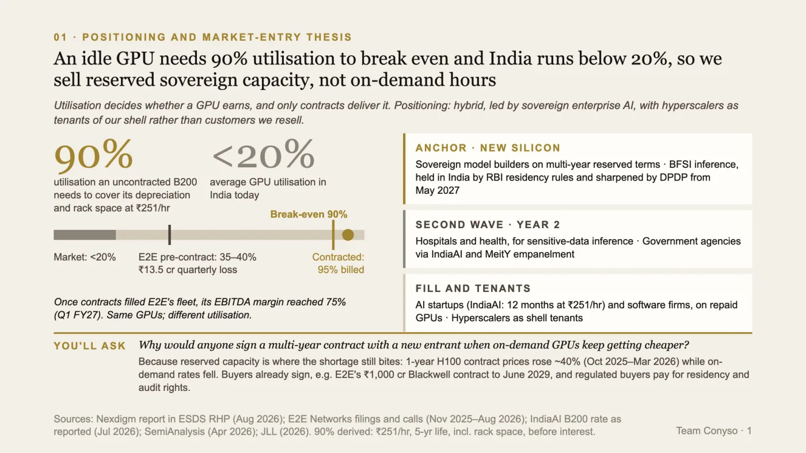
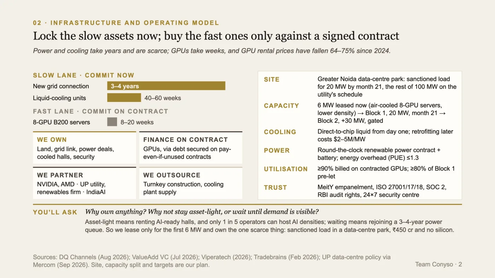
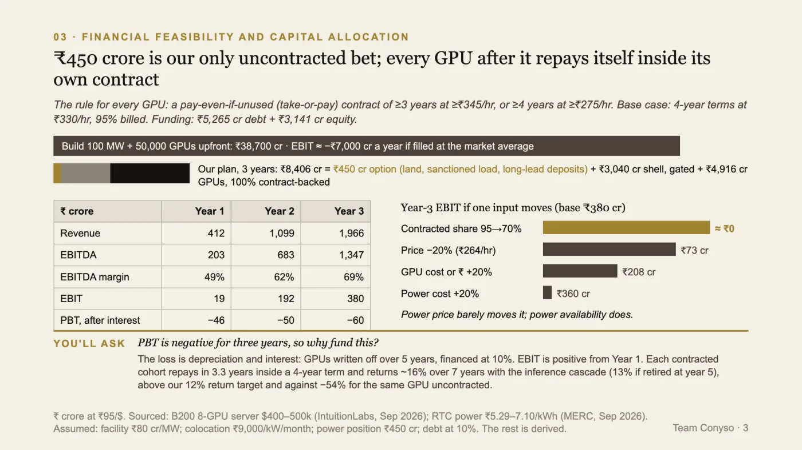
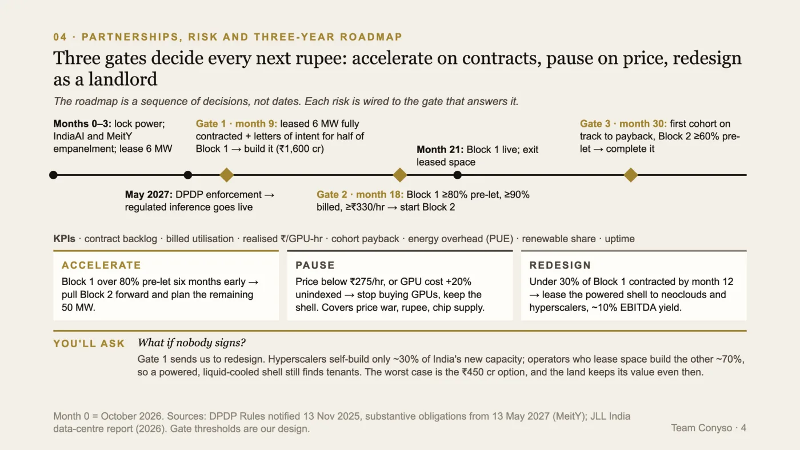

Certamus · Case competition
Crack the Case
Entreuzest '26, Maharaja Agrasen College · 26 September 2026 · Finalist, did not contest it
The brief below is restated in our own words. The original belongs to the organiser.
Four slides on a very large bet
The brief was an invented Indian infrastructure company deciding whether to build an AI-ready data-centre platform, partner with global firms, or take a phased, asset-light route. It wanted a positioning, an operating model, a financial model, a partnership and risk plan and a three-year roadmap. All of it in four slides.
The brief belongs to the organiser, so it is restated here in our own words rather than reproduced.
The number that decides whether a GPU earns
Most of the case reads like a question about building. We thought it was a question about utilisation. A GPU rented by the hour at a going rate of about ₹251 needs roughly 90% utilisation just to cover its own depreciation and rack space. Average GPU utilisation in India runs under 20%.
So a platform selling on-demand hours loses money on most of its silicon, and a platform whose GPUs are already under contract does not. The same hardware, at a different utilisation, is a different business. That made the positioning: sovereign, reserved enterprise capacity first, sold on multi-year terms to buyers who need their data held in India, with hyperscalers as tenants of the building rather than customers we resell.

The positioning slide. An uncontracted GPU needs about 90% utilisation to cover its own depreciation and rack space; India's GPUs run below 20%. So the product is reserved capacity on contract, not hours on demand.
Lock the slow assets, buy the fast ones on contract
The second call came from lead times. Power and cooling take years to secure and are scarce. GPUs take weeks to buy, and their rental price keeps falling. So we commit early to the slow, scarce things (land, a sanctioned grid connection, power contracts, liquid-cooled halls) and buy GPUs only once a contract exists to pay for them.
In the meantime we lease a small, air-cooled space to start selling, rather than waiting for a building. The one thing we own before any demand is proven is the sanctioned power, because giving it up means rejoining a queue measured in years.

The operating model, split by lead time. A new grid connection takes three to four years and liquid-cooling units most of a year; GPU servers arrive in weeks and their rental prices have fallen sharply.
₹450 crore is the only uncontracted bet
Building the full 100 MW and 50,000 GPUs upfront costs about ₹38,700 crore and, filled at the market's average utilisation, loses around ₹7,000 crore a year. Our three-year plan costs ₹8,406 crore. Of that, ₹450 crore buys the option (land, the sanctioned load and long-lead deposits), about ₹3,040 crore builds the shell behind gates, and every GPU is bought against a take-or-pay contract.
EBITDA margin rises from 49% to 69% over three years and EBIT is positive from the first. Profit after interest is negative for all three, and we put that on the slide rather than leaving it to be found: it is depreciation and debt service on the GPUs, and each contracted batch repays inside its own contract term.
The sensitivity is where the argument lives. Moving power price by 20% barely touches the result. Dropping the contracted share from 95% to 70% wipes out year-three EBIT entirely. Utilisation is the business; the rest is detail.

The financial slide. Building everything upfront costs ₹38,700 crore and loses money at market utilisation; our three-year plan costs ₹8,406 crore, of which ₹450 crore is the only spend not backed by a contract.
Gates, not dates
The roadmap is a sequence of decisions. Build the first block only once the leased space is fully contracted and letters of intent cover half of it. Start the second only when the first is mostly pre-let at the target price. Stop buying GPUs if the price falls below the floor or GPU cost rises without an index clause.
The question we expected most was what happens if nobody signs. The answer is the third gate: if under 30% of the first block is contracted by month twelve, we stop being a compute company and lease the powered, cooled shell to the operators who build most of India's capacity. The worst case is the ₹450 crore option, and the land keeps its value.

The roadmap as three decision gates: accelerate on contracts, pause on price, redesign as a landlord if nobody signs.
Where it is weakest
The most exposed numbers on the slides are ours, not sourced. The site, the split of capacity, the gate thresholds and several cost inputs (facility cost per megawatt, colocation rates, the size of the power position) are assumptions, labelled as assumptions on the slide. The 90% break-even is derived from a reported rate and a five-year life, not observed.
And the plan rests on buyers signing multi-year contracts with a new entrant. The evidence we had is that reserved capacity is where the shortage still bites, and that one listed Indian operator has signed exactly that kind of contract. That is support, not proof, and a final would have been the place to be pushed on it.
The final we did not turn up to
The written round shortlisted ten teams for a final on 28 September, and we were one of them. We did not contest it. It fell on a day of classes at IIM Sirmaur, so the four slides above are where this one stops.
Who did what
- Krishna ChagtiFramed the case as a utilisation problem rather than a building one, and built the positioning and the operating model on that
- Krishay NayyarSized it: the capital plan, the three-year financials, and the sensitivity that shows contracted share is the only input that matters
- Drishti SoniBuilt the roadmap as three decision gates, and closed on the one number the whole plan rests on
- Aksh KansaraTested the assumptions, and wrote the question each slide answers before a panel could ask it